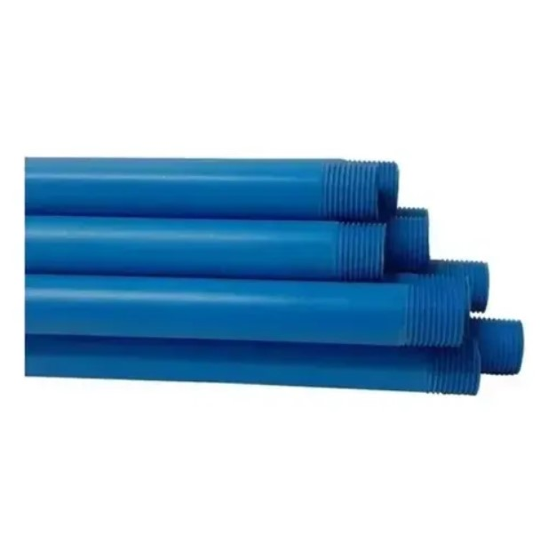
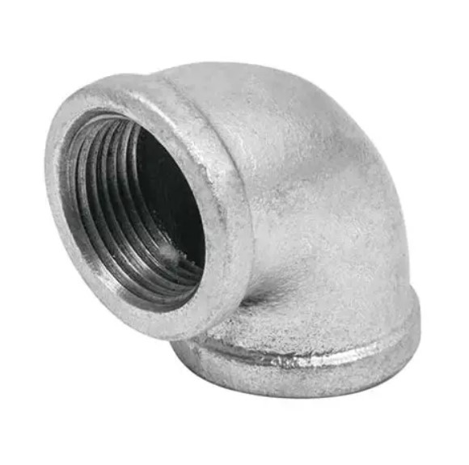
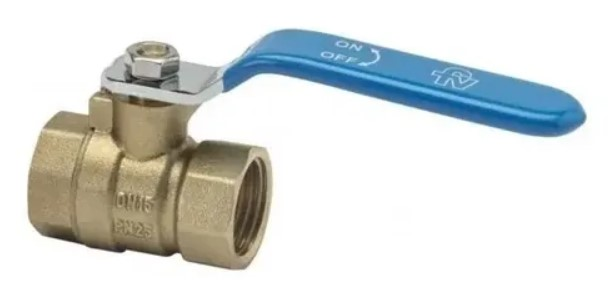
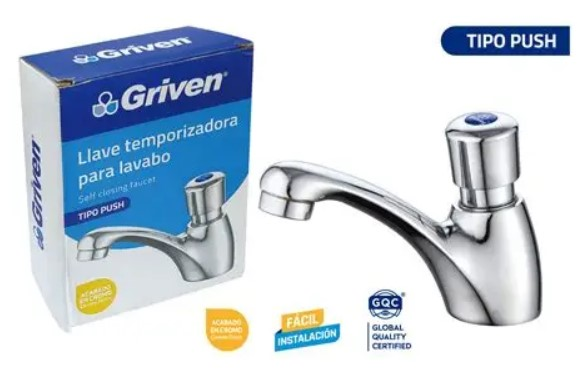
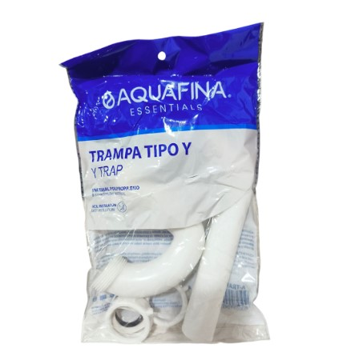
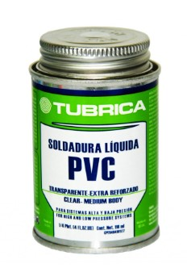
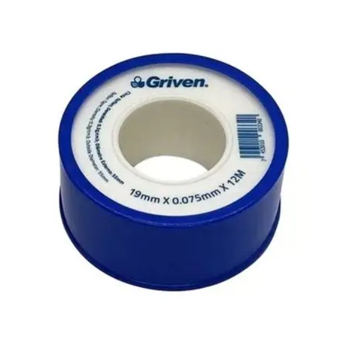
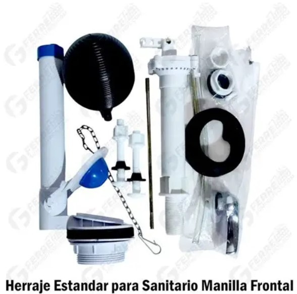

Tubo PVC azul de rosca de 1/2" (agua fría)
Tubo PVC azul de rosca de 1/2" (agua fría)
Tubería rígida estándar utilizada para la distribución de agua potable en viviendas.
Organice la Plomería : Compre Accesorios para la Instalacion de Plomería

Tubería rígida estándar utilizada para la distribución de agua potable en viviendas.

Conexión empleada para cambiar la dirección de las tuberías de agua fría en esquinas o bajantes.

Válvula de cierre rápido que permite cortar el suministro de agua para mantenimiento o emergencias.

Pieza terminal para controlar la salida de agua en baños residenciales.

Trampa de desagüe que evita el retorno de malos olores desde la tubería sanitaria.

Pegamento indispensable para unir de forma hermética tubos y conexiones de PVC.

Cinta selladora utilizada en uniones roscadas de llaves, niples y grifería para prevenir fugas.

Conjunto interno de válvula de llenado y descarga para reparar tanques de inodoros.